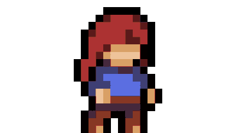
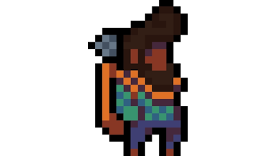

Celeste's Hidden Secrets
Prepare to embark on a breathtaking journey through the enigmatic world of Celeste Mountain.
In "Celeste's Hidden
Secrets," we will unveil the game's most well-guarded mysteries, from concealed pathways to
enigmatic chambers. Our
in-depth exploration will not only guide you through these hidden gems but also delve into the
lore and secrets that
make Celeste an unforgettable experience. Get ready to unlock the mysteries of Celeste!

Strawberry Savvy
Become the ultimate strawberry collector with our comprehensive guide to mastering the art of
strawberry hunting in
Celeste. In "Strawberry Savvy," we'll provide you with expert insights, insider tips, and proven
strategies to conquer
the trickiest strawberry locations. No more frustration or missed strawberries – become the
berry-hunting champion you
were destined to be!
Crystal Heart Chronicles
Set out on a thrilling adventure to collect all the elusive Crystal Hearts hidden within the
depths of Celeste Mountain.
"Crystal Heart Chronicles" is your definitive guide to conquering every heart-pounding
challenge.
We'll lead you through
each heart's location, unravel their intricate puzzles, and celebrate your triumphs as you
acquire
these coveted
treasures. Get ready for an exhilarating Crystal Heart hunt!
Theo's Selfie Gallery
Step into the whimsical world of Theo and join him on a selfie adventure like no other.
"Theo's
Selfie
Gallery" is your portal to the countless snapshots of this friendly explorer as he accompanies
Madeline on
her journey through Celeste Mountain. In this article, we'll delve into the art of taking
in-game
selfies,
share some of the funniest and most creative captures, and provide tips to help you capture
those
picture-perfect moments on the mountain's treacherous slopes. Get ready to strike a pose and
embrace
the
selfie side of Celeste!
